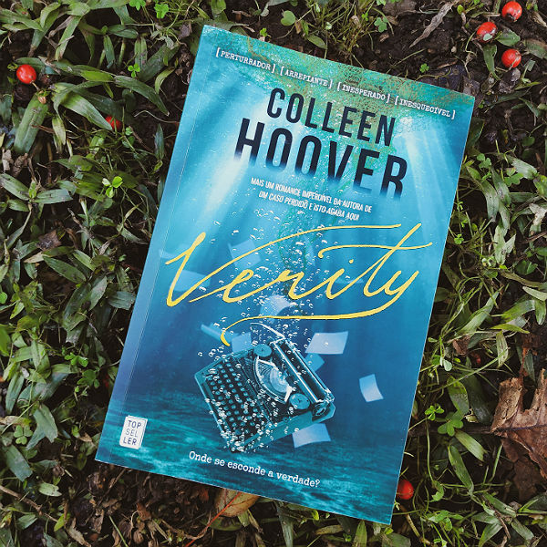
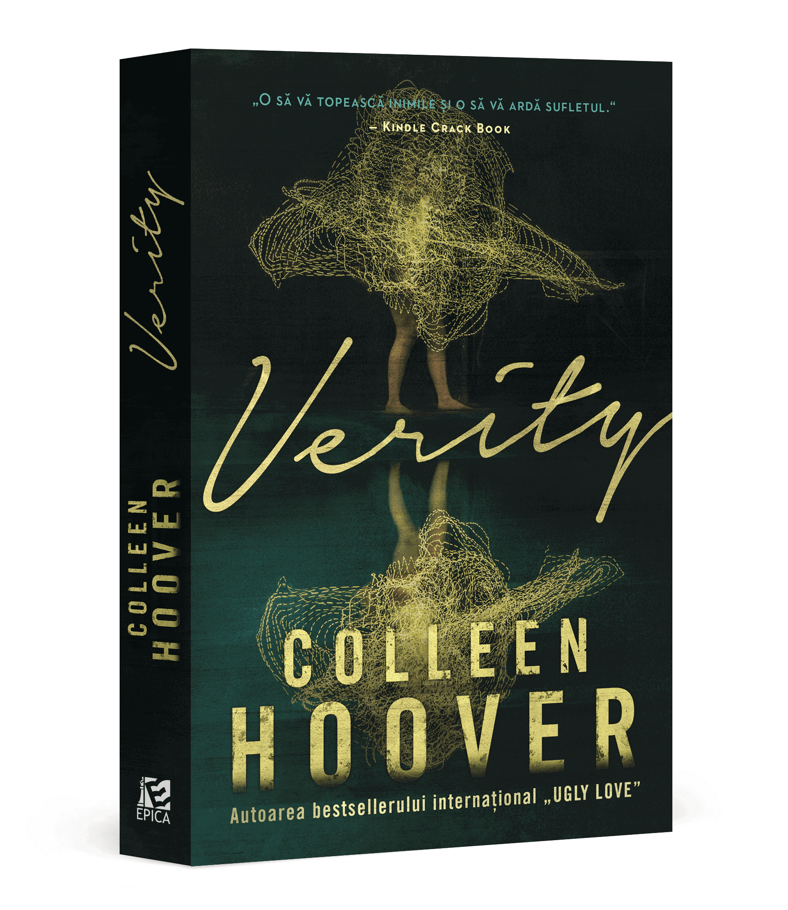

Verity: Colleen Hoover
Verity é o primeiro thriller de Colleen Hoover e deixa os leitores envolvidos do começo ao fim. No livro acompanhamos um casal apaixonado e uma intrusa. Em Verity, Colleen Hoover deixa de lado os romances, para criar um suspense psicológico, a narrativa explora os lados sombrios dos principais personagens e deixando surpresas para o leitor até o último minuto.

